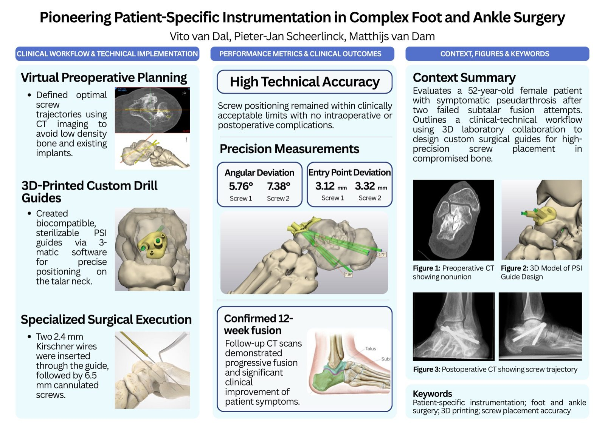

December 2025
Heracleum Hulpfonds steunt onderzoek naar artrose, obesitas en transmurale zorg
Over de subsidie voor het Transmuraal Tilburg Cohort en de wetenschappelijke opzet van een digitaal zorgpad.
Lees artikelArtikelen
Kies wat bij je vraag past. Sommige artikelen zijn geschreven voor patienten, andere voor zorgprofessionals of voor iedereen die meer wil weten over onderzoek en innovatie.
Voor wie
Onderwerp
December 2025
Over de subsidie voor het Transmuraal Tilburg Cohort en de wetenschappelijke opzet van een digitaal zorgpad.
Lees artikel
Patienten
Uitleg over pseudoartrose, een niet-vastgegroeide artrodese en hoe 3D-planning kan helpen bij complexe revisiechirurgie van voet en enkel.
Lees artikelZorgprofessionals
Professionele duiding van 3D-planning, custom drill guides en schroefpositionering bij revisie-artrodese in gecompromitteerd bot.
Lees artikel
Onderzoek
Over de Leefstijlcoalitie-voucher om in het ETZ een digitaal zorgpad voor artrose en obesitas uit te rollen met partners in ziekenhuis en regio.
Lees artikelZorgprofessionals
Professionele duiding van het NTvG-artikel over educatie, oefentherapie, leefstijl, netwerkzorg en digitale monitoring.
Lees artikel
Patienten
Begrijpelijke uitleg over artrosezorg, bewegen, leefstijl en samenwerking tussen zorgverleners, zonder medisch advies op maat.
Lees artikelEr staan nog geen artikelen bij deze combinatie. Kies een ander onderwerp of bekijk alle artikelen.